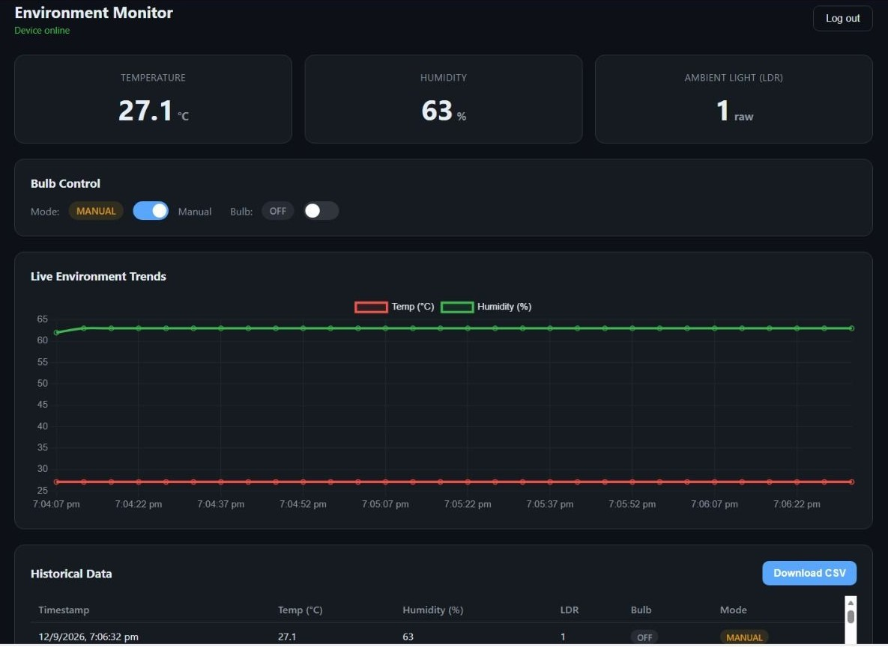
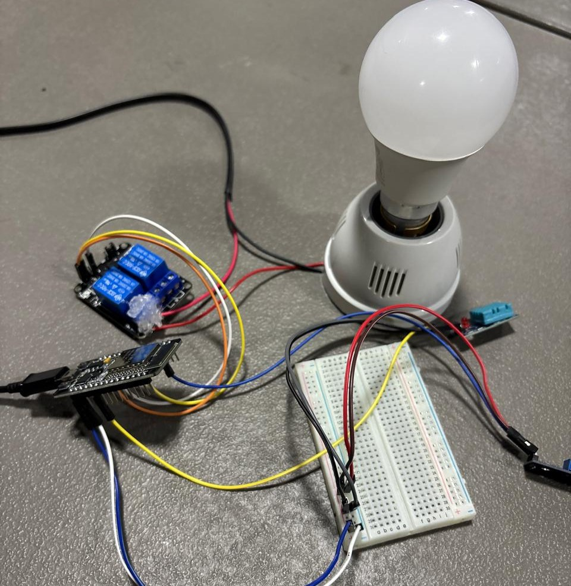
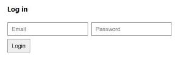
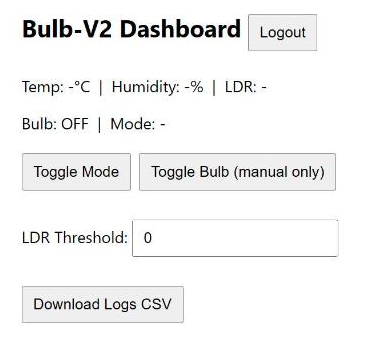
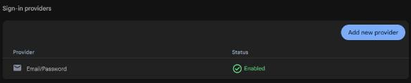
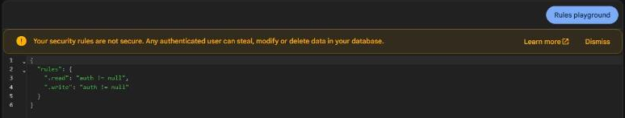

1Overview
Task 4 expands the system into a complete multi-sensor environmental telemetry station and authenticated cloud control system using Google Firebase. The ESP32 continuously samples ambient temperature, relative humidity, and light levels, pushing live updates to Firebase Realtime Database (RTDB).
A web dashboard hosted on Firebase Hosting provides real-time gauge visualizations, secure Firebase Email/Password Authentication, and bidirectional relay toggle controls with instant cloud synchronization.
2Concepts
Firebase Realtime Database (RTDB): A cloud-hosted NoSQL JSON database. Data is synchronized in real time to all connected clients via persistent WebSockets, enabling instantaneous UI updates whenever sensor data or relay states change.
Client Authentication & Security Rules: Unauthenticated public internet access to actuator pins is a critical vulnerability. Firebase Authentication issues JWT tokens, while RTDB JSON rules ensure only authenticated users can read sensor nodes or modify bulb state.
Sensor Transduction: The DHT11 uses a proprietary single-wire bi-directional digital protocol to measure temperature (0–50 °C) and humidity (20–90%). The LDR (Light Dependent Resistor) forms a voltage divider with a 10 kΩ pull-down resistor, read by the microcontroller's 12-bit Analog-to-Digital Converter (ADC).
3Architecture & Data Flow
4Hardware & Software
| Hardware Component | Cloud Services & Libraries |
|---|---|
| ESP32 Microcontroller | Google Firebase Realtime Database |
| DHT11 Digital Temperature & Humidity Sensor | Firebase Authentication (Email/Password) |
| LDR Light Sensor + 10 kΩ Resistor | Firebase Hosting (Web Dashboard) |
| 1-Channel 5V Relay + Mains Bulb | Firebase ESP Client Library (HTTP/REST) |
| Breadboard & Jumper Wires | HTML5, CSS3, JavaScript (Firebase JS SDK v9) |
5Wiring / Setup
| Sensor / Actuator | ESP32 Pin | Wiring Notes |
|---|---|---|
| DHT11 Data | GPIO 4 | Connected with internal/external pull-up resistor to 3.3V |
| LDR Divider | GPIO 34 | Analog ADC1 channel; LDR to 3.3V, 10 kΩ to GND |
| Relay IN | GPIO 5 / GPIO 10 | Active-LOW digital trigger |
| VCC & GND | 3.3V / 5V / GND | Common rail on breadboard |
6Implementation
firmware/bulb_v2_firebase.ino view on GitHub
#include <Arduino.h>
#include <WiFi.h>
#include <Firebase_ESP_Client.h>
#include <DHT.h>
#include "secrets.h"
#define DHTPIN 4
#define DHTTYPE DHT11
#define LDR_PIN 34
#define RELAY_PIN 5
DHT dht(DHTPIN, DHTTYPE);
FirebaseData fbdo;
FirebaseAuth auth;
FirebaseConfig config;
void setup() {
Serial.begin(115200);
pinMode(RELAY_PIN, OUTPUT);
digitalWrite(RELAY_PIN, HIGH); // Relay off (active low)
dht.begin();
WiFi.begin(WIFI_SSID, WIFI_PASSWORD);
while (WiFi.status() != WL_CONNECTED) { delay(500); Serial.print("."); }
config.api_key = API_KEY;
config.database_url = DATABASE_URL;
auth.user.email = USER_EMAIL;
auth.user.password = USER_PASSWORD;
Firebase.begin(&config, &auth);
Firebase.reconnectWiFi(true);
}
void loop() {
if (Firebase.ready()) {
// 1. Read sensors & update /sensors/current
float t = dht.readTemperature();
float h = dht.readHumidity();
int ldr = analogRead(LDR_PIN);
FirebaseJson json;
json.set("temperature", t);
json.set("humidity", h);
json.set("ldr", ldr);
json.set("updatedAt", (double)millis());
Firebase.RTDB.setJSON(&fbdo, "/sensors/current", &json);
// 2. Read /bulb/status and actuate relay
if (Firebase.RTDB.getBool(&fbdo, "/bulb/status")) {
bool on = fbdo.boolData();
digitalWrite(RELAY_PIN, on ? LOW : HIGH);
}
}
delay(5000);
}7Configuration
- Create a Firebase Project in the Firebase Console.
- Enable Email/Password provider under Authentication > Sign-in method.
- Create a Realtime Database and apply read/write security rules for authenticated users.
- Fill in
secrets.hwith your Wi-Fi credentials, Firebase Web API Key, and User Email/Password. - Upload firmware to the ESP32 and open the hosted web dashboard.
8Evidence & Screenshots






9Challenges & Fixes
Problem: Non-linear LDR analog readings on ESP32 ADC.
Why: ESP32 ADC pins have non-linear characteristics above 2.8V and below 0.1V.
Fix: Calibrated with 11dB attenuation (analogSetPinAttenuation(LDR_PIN, ADC_11db)) and a 10 kΩ pull-down resistor to center the voltage swing between 0.3V and 2.6V under typical room lighting.
Problem: Permission denied errors in web client.
Why: Default RTDB security rules restrict all reads and writes unless authenticated.
Fix: Implemented Firebase JS SDK v9 client authentication state observers (onAuthStateChanged) ensuring tokens are attached to every database listener.
10Reflection
Integrating Firebase demonstrated how modern cloud backends eliminate the need for custom server infrastructure. Using managed WebSockets and Realtime Database rules allows an embedded device to become a multi-tenant cloud application with instant reactivity and robust user authentication.
11Repository Link
Complete source code for Task 4: https://github.com/Udhayan27-Dev/IoT_Task1/tree/main/task4-firebase-dashboard
✓Checklist Coverage
| Guide Requirement | Location |
|---|---|
| Objective & problem addressed | 1. Overview |
| Realtime Database & Authentication concepts | 2. Concepts |
| End-to-end cloud data flow diagram | 3. Architecture |
| Hardware & service components | 4. Hardware & Software |
| Sensor pinout and wiring table | 5. Wiring / Setup |
| ESP32 Firebase firmware code | 6. Implementation |
| Firebase console configuration | 7. Configuration |
| Photographic evidence & dashboard screens | 8. Evidence |
| ADC calibration & security rule fixes | 9. Challenges & Fixes |
| Technical reflection | 10. Reflection |
| GitHub repository link | 11. Repository Link |